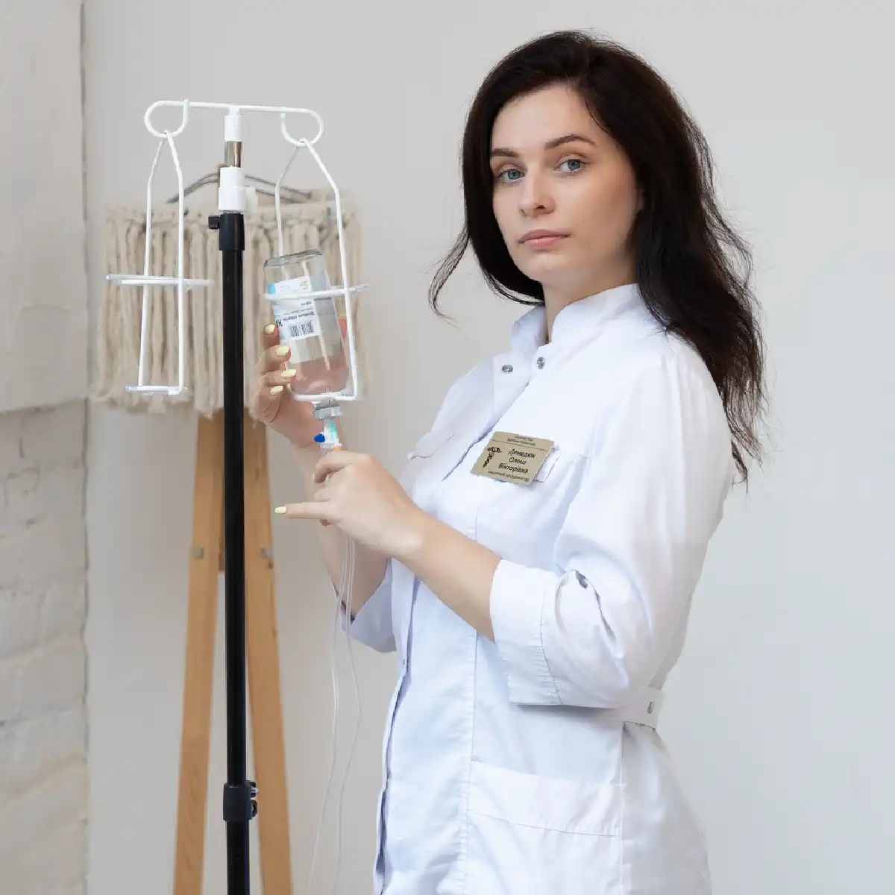

+38(068)
79 72 782
+38(068)
79 72 782Капельница от наркотиков в Чугуеве
Быстрое и безопасное очищение организма


Бесплатная консультация, работаем круглосуточно 24/7
Быстрое и безопасное очищение организма

Дата написания: Обновляется...
Последнее обновление: Обновляется...
Наркотическая интоксикация — это тяжелое состояние, при котором организм подвергается выраженному токсическому воздействию психоактивных веществ, нарушающему работу жизненно важных органов и систем. Она может развиваться как после разового употребления, особенно при превышении дозировки, так и на фоне длительной зависимости, когда токсическая нагрузка накапливается и постепенно истощает ресурсы организма.
Под воздействием наркотических веществ страдают центральная нервная система, сердечно-сосудистая система, печень и почки. Нарушается обмен веществ, ухудшается работа мозга, появляются расстройства сознания, изменения поведения и сбои в работе внутренних органов. В зависимости от типа вещества симптомы могут варьироваться, однако во всех случаях интоксикаци представляет серьезную угрозу для здоровья и требует внимания. В таких ситуациях крайне важна своевременная медицинская помощь. Одним из наиболее эффективных методов является инфузионная терапия — капельница от наркотиков, которая позволяет быстро снизить уровень токсинов в организме, восстановить водно-электролитный баланс и стабилизировать общее состояние пациента.
Симптомы наркотической интоксикации могут значительно варьироваться в зависимости от вида вещества, его дозировки, длительности употребления и индивидуальных особенностей организма. Однако в большинстве случаев формируется комплекс признаков, указывающих на выраженное токсическое воздействие на центральную нервную систему и внутренние органы. Чаще всего наблюдаются выраженная слабость, тошнота, рвота, головокружение, нарушение координации движений и шаткость походки. Человек может выглядеть дезориентированным, с трудом ориентироваться в пространстве и времени, испытывать проблемы с концентрацией и памятью. Нередко отмечается спутанность сознания, заторможенность или, наоборот, чрезмерное возбуждение.
Со стороны нервной системы возможны различные психоэмоциональные нарушения. Это может быть выраженная тревожность, панические атаки, раздражительность, агрессия или резкие перепады настроения. В некоторых случаях развиваются галлюцинации, бредовые идеи и потеря связи с реальностью. При угнетении нервной системы, наоборот, наблюдается сильная сонливость, апатия, замедление реакций и снижение уровня сознания.
Физические проявления также могут быть разнообразными и опасными. Часто возникают учащенное сердцебиение, скачки артериального давления, ощущение перебоев в работе сердца, боль или дискомфорт в грудной клетке. Нарушается дыхание — оно может становиться частым, поверхностным или, наоборот, замедленным и угнетенным, что особенно опасно при употреблении некоторых видов наркотиков. Часто могут наблюдаться потливость, озноб, дрожь в теле, обезвоживание, сухость во рту и выраженное истощение. В тяжелых случаях возможны судорожные приступы, потеря сознания, развитие коматозного состояния и другие угрожающие жизни осложнения.
Передозировка — это критическое состояние, при котором концентрация наркотического вещества в организме превышает допустимый уровень и приводит к острому нарушению работы жизненно важных систем. Такое состояние развивается быстро и сопровождается резким ухудшением самочувствия, представляя прямую угрозу для жизни. К основным признакам передозировки относятся:
Со стороны нервной системы могут наблюдаться:
Состав капельницы от наркотиков всегда подбирается строго индивидуально, поскольку универсальной схемы детоксикации не существует. Врач-нарколог оценивает не только сам факт употребления психоактивных веществ, но и целый комплекс факторов: тип и длительность приёма наркотика, выраженность интоксикации, возраст и массу тела пациента, степень обезвоживания, состояние сердечно-сосудистой системы, печени, почек и нервной системы, а также наличие хронических заболеваний.
Стоимость капельницы от наркотиков в Чугуеве начинается от 2499 грн.
| Популярные услуги | Цена |
|---|---|
| Консультация нарколога | От 1500 грн |
| Лечение наркомании | От 2499 грн |
| Капельница от наркотиков | От 2499 грн |
| Вывод из запоя на дому | От 2199 грн |
Помощь нарколога необходима при выраженных симптомах интоксикации, ухудшении общего состояния, а также при длительном или регулярном употреблении наркотических веществ. В таких ситуациях организм испытывает серьезную токсическую нагрузку, с которой самостоятельно справиться уже не может. Тревожными признаками, требующими обращения к специалисту, являются сильная слабость, выраженное истощение, нарушения сознания, дезориентация, проблемы с дыханием или перебои в работе сердца. Также настораживать должны судороги, резкие перепады давления, потеря контроля над состоянием или неадекватное поведение.
При длительном употреблении наркотиков интоксикация часто носит хронический характер, что приводит к постепенному разрушению внутренних органов и нарушению работы нервной системы. В таких случаях состояние может ухудшаться постепенно, но при этом оставаться опасным. Самостоятельное лечение в подобных ситуациях не только неэффективно, но и может усугубить проблему. Без медицинской помощи невозможно правильно оценить тяжесть состояния, подобрать безопасную терапию и предотвратить развитие осложнений.
Передозировка или длительное злоупотребление прегабалином оказывает выраженное токсическое воздействие на центральную нервную систему и внутренние органы. Наиболее частыми проявлениями становятся нарушение координации движений, шаткость походки, выраженная сонливость, заторможенность, спутанность сознания, снижение концентрации внимания и проблемы с памятью. В более тяжёлых случаях возможны резкие перепады артериального давления, тревожные состояния и угнетение дыхания.
Инфузионная терапия (капельница) при интоксикации прегабалином применяется как эффективный и безопасный способ стабилизации состояния. Внутривенное введение препаратов позволяет ускорить выведение действующего вещества и его метаболитов из крови, снизить токсическую нагрузку на печень и почки, а также поддержать работу нервной системы. Благодаря инфузионной терапии уменьшается головокружение, проходит выраженная слабость и заторможенность, нормализуется работа центральной нервной системы, улучшается ясность мышления и общее самочувствие. Капельница не только облегчает симптомы, но и снижает риск осложнений, создавая условия для дальнейшего восстановления организма и, при необходимости, начала полноценного лечения зависимости.
Налбуфин относится к опиоидным анальгетикам и при неконтролируемом приёме или злоупотреблении может вызывать тяжёлую интоксикацию, угнетение центральной нервной системы и опасные нарушения дыхания. Особенно высокий риск возникает при превышении дозировок, длительном применении или сочетании препарата с алкоголем и другими психоактивными веществами. В таких состояниях организм перестаёт самостоятельно справляться с токсической нагрузкой, что угрожает работе сердца, лёгких и мозга.
Капельница при интоксикации налбуфином применяется как метод интенсивной детоксикационной терапии. Внутривенное введение препаратов позволяет быстрее вывести продукты распада опиоида из крови, снизить их токсическое воздействие и стабилизировать жизненно важные функции. Инфузионная терапия проводится под контролем врача и подбирается индивидуально с учётом состояния пациента. После процедуры, как правило, уменьшается выраженная слабость и заторможенность, улучшается циркуляция крови, нормализуются показатели давления и пульса, становится более стабильным дыхание. Капельница не только облегчает острые симптомы интоксикации, но и создаёт условия для дальнейшего восстановления организма и, при необходимости, начала полноценного лечения лекарственной зависимости под наблюдением специалистов.
Экстази (MDMA) оказывает выраженное токсическое воздействие на организм, в первую очередь нарушая водно-электролитный баланс и работу нервной и сердечно-сосудистой систем. Под его влиянием резко усиливается потоотделение, повышается температура тела, учащается сердцебиение и возрастает риск обезвоживания и перегрева. На фоне интоксикации нередко появляются тревожность, панические реакции, головная боль, мышечные спазмы и судороги, а нервная система быстро истощается.
Капельница при интоксикации экстази применяется как метод экстренной инфузионной терапии, направленной на стабилизацию состояния и предотвращение опасных осложнений. Внутривенное введение растворов позволяет быстро восполнить потерю жидкости и электролитов, нормализовать температуру тела и снизить нагрузку на сердце и сосуды. Детоксикационные препараты ускоряют выведение токсинов и продуктов распада MDMA, уменьшая их вредное влияние на мозг и внутренние органы. После инфузии уменьшается тревожность и внутреннее напряжение, исчезает выраженная головная боль, стабилизируется давление и сердечный ритм, постепенно возвращается чувство спокойствия и контроля над состоянием. Капельница при экстази не только облегчает острые симптомы интоксикации, но и создаёт условия для восстановления нервной системы и предотвращения долгосрочных последствий для здоровья.
Инфузионная терапия при интоксикации или абстиненции после метадона является одним из наиболее эффективных и безопасных способов облегчить состояние пациента в период ломки. Метадон — это синтетический опиоид с длительным периодом действия, поэтому его остатки могут долго сохраняться в организме, поддерживая тяжёлые симптомы отмены. Капельница позволяет ускорить выведение токсинов и продуктов распада препарата, снижая их негативное влияние на внутренние органы и нервную систему.
Основная задача капельницы при метадоновой зависимости — стабилизировать жизненно важные функции организма. Инфузионная терапия помогает нормализовать работу центральной нервной системы, снизить выраженность тревоги, раздражительности и панических состояний, а также уменьшить интенсивные боли в мышцах и суставах, характерные для опиоидной абстиненции. Дополнительно улучшается работа сердечно-сосудистой системы: выравнивается артериальное давление, стабилизируется пульс и уменьшается риск осложнений со стороны сердца. Уже после первой процедуры пациенты отмечают заметное снижение слабости, уменьшение болевого синдрома, появление аппетита и улучшение сна. Постепенно возвращается энергия и способность адекватно воспринимать происходящее, что особенно важно для дальнейшего этапа лечения и отказа от употребления. Капельница при метадоновой абстиненции — это важный первый шаг к стабилизации состояния и началу полноценной реабилитации.
Кокаиновая интоксикация представляет серьёзную угрозу для сердечно-сосудистой и нервной систем. Этот психостимулятор резко повышает нагрузку на сердце и сосуды, вызывает спазм артерий, скачки артериального давления, тахикардию и выраженное психоэмоциональное перевозбуждение. Именно поэтому капельница при употреблении кокаина в первую очередь направлена на стабилизацию жизненно важных функций и снижение риска опасных осложнений.
Инфузионная терапия помогает нормализовать сердечный ритм, мягко снизить артериальное давление и уменьшить вероятность развития аритмий, инфаркта или инсульта. Специально подобранные препараты снимают сосудистый спазм, улучшают кровоснабжение мозга и способствуют восстановлению нормального дыхания. Одновременно капельница снижает выраженность тревоги, внутреннего напряжения и панических атак, которые часто сопровождают кокаиновую интоксикацию. Благодаря капельнице состояние стабилизируется значительно быстрее, чем при ожидании «само пройдёт». Уже после процедуры пациенты отмечают снижение сердцебиения, улучшение дыхания, исчезновение паники и общее чувство спокойствия. Это важный этап не только для снятия острой интоксикации, но и для предотвращения тяжёлых последствий, которые кокаин может оставить даже после однократного употребления.
Амфетаминовая интоксикация сопровождается выраженной перегрузкой всех систем организма. Этот психостимулятор резко усиливает выброс адреналина и дофамина, что приводит к сильному обезвоживанию, учащённому сердцебиению, скачкам артериального давления, перегреву тела и истощению нервной системы. На фоне употребления часто возникают тревога, панические состояния, бессонница и неконтролируемое психомоторное возбуждение, которые могут сохраняться даже после прекращения действия вещества.
Капельница при амфетамине направлена на быстрое восстановление внутреннего баланса организма и безопасное выведение токсичных продуктов распада. Инфузионная терапия восполняет дефицит жидкости и электролитов, снижает концентрацию токсинов в крови и помогает уменьшить чрезмерную стимуляцию нервной системы. Это особенно важно для профилактики аритмий, судорог и острых психотических реакций. Уже в течение 1–2 часов после начала инфузии уменьшается дрожь в теле, исчезает ощущение внутреннего «перегрева», снижается тахикардия и психомоторное возбуждение. Пациент начинает чувствовать спокойствие, появляется возможность уснуть, восстанавливается общее самочувствие. Капельница после амфетамина — это важный этап не только для снятия острого состояния, но и для предотвращения серьёзных осложнений со стороны сердца, сосудов и нервной системы.
ЛСД оказывает мощное воздействие на центральную нервную систему, вызывая ярко выраженные психоэмоциональные реакции: галлюцинации, дезориентацию, тревожность и сильную перегрузку нервной системы. В некоторых случаях наблюдаются скачки давления, учащённое сердцебиение, бессонница и раздражительность. Даже после прекращения действия вещества организм может оставаться в состоянии стресса и повышенной активности, что создаёт риск осложнений для психики и сердца.
Капельница при интоксикации ЛСД направлена на быстрое восстановление физиологического и психоэмоционального равновесия. Инфузионная терапия обеспечивает комплексное воздействие: восполнение жидкости и электролитов, снижение перегрузки нервной системы, восстановление метаболических процессов и нормализацию работы жизненно важных органов. Эффект процедуры проявляется уже через 1–2 часа: снижается тревожность, исчезает внутреннее напряжение, восстанавливается ясность мышления, нормализуется сон и работа сердечно-сосудистой системы. Капельница после ЛСД не только облегчает острые симптомы интоксикации, но и предотвращает развитие осложнений, обеспечивая безопасное восстановление организма и психики.
Синтетические соли вызывают крайне опасное возбуждение нервной системы, психозы, тахикардию и риск судорог. Капельница направлена на быстрое снижение токсического воздействия, восстановление баланса микроэлементов и предотвращение острого психоза. Препараты нормализуют сердечный ритм, улучшают работу мозга, снимают возбуждение и возвращают пациенту способность адекватно воспринимать окружающее. Инфузия помогает стабилизировать сон и предотвращает судорожные реакции.
При интоксикации солями крайне важно не только снять острые симптомы, но и защитить организм от скрытых последствий, которые могут развиваться даже спустя несколько часов после употребления. Токсические соединения оказывают разрушительное воздействие на нервные клетки, вызывая сильный спазм сосудов, нарушение мозгового кровообращения и кислородное голодание тканей. Именно поэтому во время терапии применяются растворы, улучшающие микроциркуляцию, поддерживающие метаболизм мозга и снижающие риск отёка тканей и неврологических осложнений. После стабилизации состояния пациенту обязательно рекомендуется наблюдение у нарколога и психологическая поддержка, поскольку употребление синтетических солей часто приводит к формированию быстрой и тяжёлой зависимости. Ранняя диагностика, детоксикация и последующая реабилитация значительно снижают риск повторных интоксикаций и психозов, помогают восстановить здоровье и вернуться к стабильной и безопасной жизни.
Детоксикация является первым и обязательным этапом лечения зависимости, так как именно она позволяет устранить острые последствия употребления наркотических веществ и стабилизировать состояние пациента. Основная задача этого этапа — очистить организм от токсинов, снизить их концентрацию в крови и восстановить базовые функции жизненно важных систем. В процессе детоксикации уменьшается токсическая нагрузка на организм, нормализуется работа сердечно-сосудистой и нервной систем, восстанавливается водно-электролитный баланс. За счёт этого снижается физическое напряжение, уменьшаются симптомы интоксикации, улучшается общее самочувствие и эмоциональное состояние пациента.
После снятия острой интоксикации организм начинает постепенно восстанавливаться: улучшается сон, снижается тревожность, появляется больше энергии и ясности мышления. Это создает необходимые условия для перехода к следующему этапу лечения — работе с психологической зависимостью. Однако важно понимать, что детоксикация не устраняет зависимость полностью. Она снимает лишь физическую составляющую проблемы, тогда как психологическая тяга к веществу сохраняется. Именно поэтому для достижения устойчивого результата необходим комплексный подход, включающий психотерапию, реабилитацию и дальнейшую поддержку пациента.
После физического очищения организма сохраняется психологическая тяга к веществу, которая может проявляться в виде навязчивых мыслей, эмоциональной зависимости и стремления вернуться к прежнему образу жизни. Именно поэтому следующим этапом лечения становится работа с психотерапевтом, направленная на устранение глубинных причин зависимости. Психотерапия помогает выявить факторы, которые привели к формированию зависимости: стресс, внутренние конфликты, эмоциональные травмы или особенности мышления. В процессе работы пациент учится по-новому реагировать на сложные жизненные ситуации, справляться с тревогой и напряжением без употребления веществ, а также формирует более здоровые поведенческие модели. Дополнительно важным аспектом является формирование устойчивой мотивации к трезвому образу жизни. Пациент учится осознавать последствия зависимости, ставить цели и выстраивать новые жизненные ориентиры. Это помогает не только отказаться от употребления, но и закрепить результат лечения на длительный срок.
Реабилитация — это комплексный и длительный процесс восстановления, направленный на возвращение человека к полноценной, трезвой жизни. Она включает не только психологическую поддержку, но и глубокую социальную адаптацию, формирование новых жизненных установок, ценностей и навыков, необходимых для устойчивого отказа от употребления наркотиков. В отличие от детоксикации, которая устраняет физические последствия, реабилитация работает с причинами зависимости и образом жизни человека.
В ходе реабилитации пациент постепенно учится выстраивать здоровый и стабильный образ жизни. Восстанавливаются утраченные социальные связи, налаживаются отношения с близкими, формируется ответственность за собственное состояние и будущее. Человек возвращается к повседневной активности — работе, учебе, общению — но уже с новыми установками и пониманием своих границ. Ключевую роль играет работа с психологами, психотерапевтами и другими специалистами. Это помогает закрепить результаты лечения, проработать внутренние конфликты, снизить риск срывов и сформировать устойчивую внутреннюю опору. Пациент учится осознавать свои эмоции, триггеры и поведенческие реакции, которые ранее приводили к употреблению.
Особое внимание уделяется развитию навыков самоконтроля, управлению стрессом и формированию новых моделей поведения. Человек осваивает способы справляться с тревогой, напряжением и жизненными трудностями без использования психоактивных веществ. Это позволяет не только отказаться от наркотиков, но и значительно повысить качество жизни, улучшить эмоциональное состояние и уверенность в себе.
Наркологическая помощь доступна круглосуточно, без выходных и праздников, что особенно важно при острых состояниях, связанных с интоксикацией. Врач может оперативно выехать на дом, провести первичный осмотр, оценить тяжесть состояния пациента и незамедлительно приступить к лечению. Такой формат позволяет начать терапию максимально быстро, без необходимости транспортировки пациента и дополнительных стрессовых факторов.
Своевременное обращение к специалисту позволяет быстро снять интоксикацию, стабилизировать работу жизненно важных систем, снизить нагрузку на сердце, печень и нервную систему. Это значительно уменьшает риск осложнений и предотвращает ухудшение состояния. Профессиональная медицинская помощь обеспечивает комплексный подход: проводится детоксикация, восстанавливается водно-электролитный баланс, нормализуется общее самочувствие. Благодаря этому процесс восстановления проходит безопаснее, быстрее и с минимальными рисками для здоровья пациента.
Звоните прямо сейчас: +38(050-021-69-57)

Статья проверена экспертом
Могучев Станислав
Врач терапевт
Возможно интересная статья:
Янтарная кислота, Бетаргин и Энтеросгель при алкогольной интоксикации

Да, мы строго соблюдаем полную конфиденциальность на всех этапах лечения. Информация о пациенте, диагнозе и прохождении терапии не передаётся третьим лицам. Обращение к нам не влечёт постановку на учёт. Вы можете быть уверены в безопасности и анонимности.
Программа лечения разрабатывается индивидуально после консультации со специалистом. Учитываются вид зависимости, её длительность, физическое и психологическое состояние пациента. Такой подход позволяет повысить эффективность терапии и снизить риск срыва. Мы не используем шаблонные решения.
Да, мы сопровождаем пациентов и после основного курса лечения. Проводятся консультации, рекомендации по адаптации и профилактике рецидивов. При необходимости возможна дальнейшая психологическая поддержка. Это помогает сохранить результат и вернуться к полноценной жизни.
Анонимно

Ну в хлопців просто золоті руки й світла голова, мене капали Олексій та Владислав, буквально за декілька сеансів я наче заново народився, до цього пив більше 3х тижнів, не міг зупинитись, дуже радий що знайшов саме цих спеціалістів, всім рекомендую
Анонимно
В течение нескольких лет я злоупотреблял алкоголь, что привело к увольнению с работы и вызвало у меня мысли о суициде. Понимая, что такой образ жизни неприемлем, я обратился за помощью в клинику “Амбрела”. Здесь я смог преодолеть свою зависимость от спиртного благодаря заботливым и опытным врачам, а также эффективной системе лечения. Спустя более года я полностью избавился от желания употреблять алкоголь, и теперь моя жизнь вернулась в норму. Я даже не приближаюсь к спиртному! Благодарю врачей клиники “Амбрела” за их помощь и заботу.
Анонимно
Я обращался за помощью в различные клиники, пытаясь избавиться от своей зависимости от алкоголя, но без особых успехов. Никак не мог справиться с желанием прибегнуть к бутылке, пока друг не посоветовал мне обратиться в центр “Амбрелла”. Я записался на прием и был поражен заботливым отношением к пациентам. Уже прошло два года, и теперь я смотрю на алкоголь с абсолютной равнодушием, активно занимаюсь спортом и улучшил отношения в семье. Благодаря центру “Амбрелла” моя жизнь была спасена от алкогольной зависимости!
Анонимно
Хочу выразить свою благодарность врачам из центра алкоголизма “Амбрела” за то, что они буквально спасли мою жизнь. В течение последнего года я сильно увлекался питьем, и все это привело к катастрофическим последствиям. Хотя я ходил на терапевтические сеансы, но безрезультатно. Тогда я нашел адрес клиники “Амбрела” в интернете, изучил отзывы и информацию о центре, и записался на прием. Там мне сразу предложили методику лечения, которая помогла не только справиться с физической ломкой, но и психической зависимостью от алкоголя. Не буду распространяться, скажу только одно - после пребывания в этой клинике я стал другим человеком, и навсегда забыл, что такое привкус алкоголя. Больше меня не тянет на это! Я искренне верю, что в центре “Амбрела” трудятся настоящие целители душ!
Анонимно
После сложного развода мой сын начал подавлять свою обиду и горе употреблением алкоголя. Он старался скрывать это от меня, но я, как мать, почувствовала, что что-то не так. В конечном итоге, ситуация стала критической. Моя знакомая посоветовала мне обратиться в клинику “Амбрела”. Я была приятно удивлена их работой! Они помогли сыну преодолеть очередной период злоупотребления алкоголем, и с тех пор прошел уже более года, и он совсем не пьет.
Анонимно
Благодаря вашей помощи, моя семья была спасена. Я с трудом уговорила мужа начать лечение, и последний каплей был пьяное ДТП. К счастью, в аварии никто не пострадал, но это был для него сигнал к действию. Он наконец согласился пройти курс лечения на дому, в стационар не хотел ложиться. Лечение было трудным, и были моменты, когда срыв был настолько близок, но благодаря вашему центру Амбрелла мы справились с этим.
Анонимно
Для меня эта клиника стала настоящим спасением! Долгое время я упорно отказывался от лечения, уверен был, что со мной все в порядке. Но к счастью, семья уговорила меня попробовать. И сегодня я чувствую себя невероятно счастливым, осознавая, что мне абсолютно не нужен алкоголь. Огромное спасибо за помощь и поддержку, которые я получил здесь! Я благодарен вам за новую возможность жить полноценной и счастливой жизнью!
Анонимно
Выражаю благодарность ребятам, которые оказали мне помощь и не отвернулись. Уже 10 месяцев я остаюсь чистой. Благодарю за то, что помогли найти новый путь в моей жизни.
Номер телефона:
+380 (68) 797 27 82
+380 (50) 021 69 57
Адрес наркологического центра вашего города уточняйте по
телефону
Работаем в: Киеве, Одессе, Львове, Харькове, Днепре,
Запорожье, Черкассах, Чугуеве, Черноморске, Каменском
Telegram: t.me/umbrellaplus
График работы: Круглосуточно